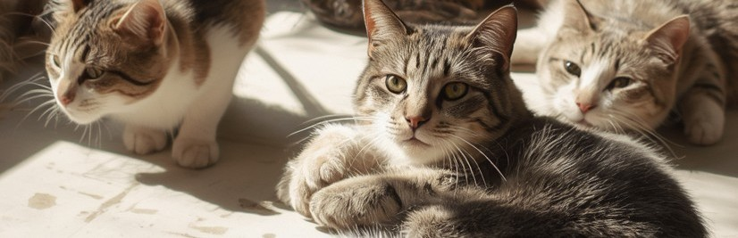
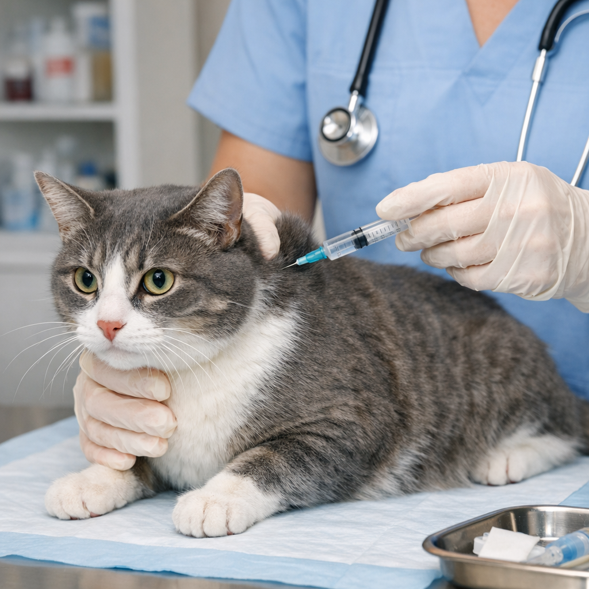
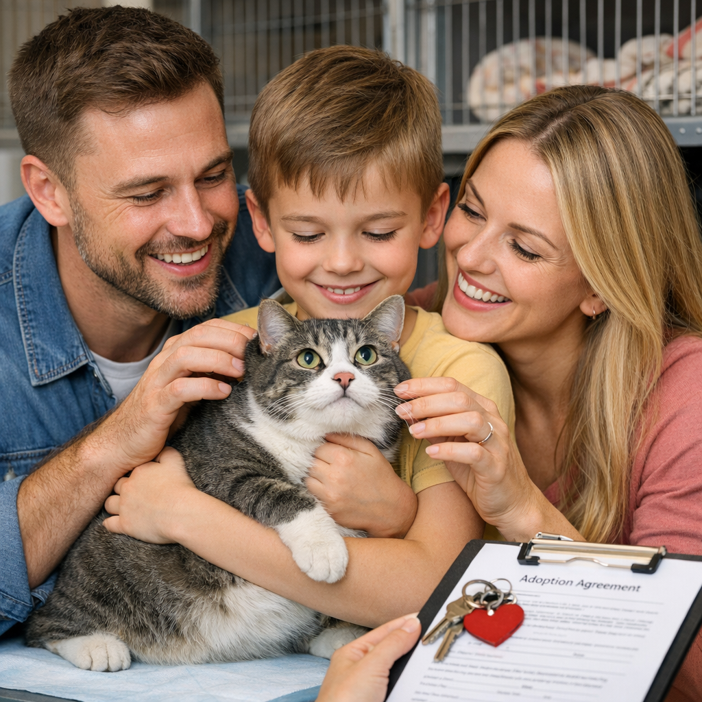
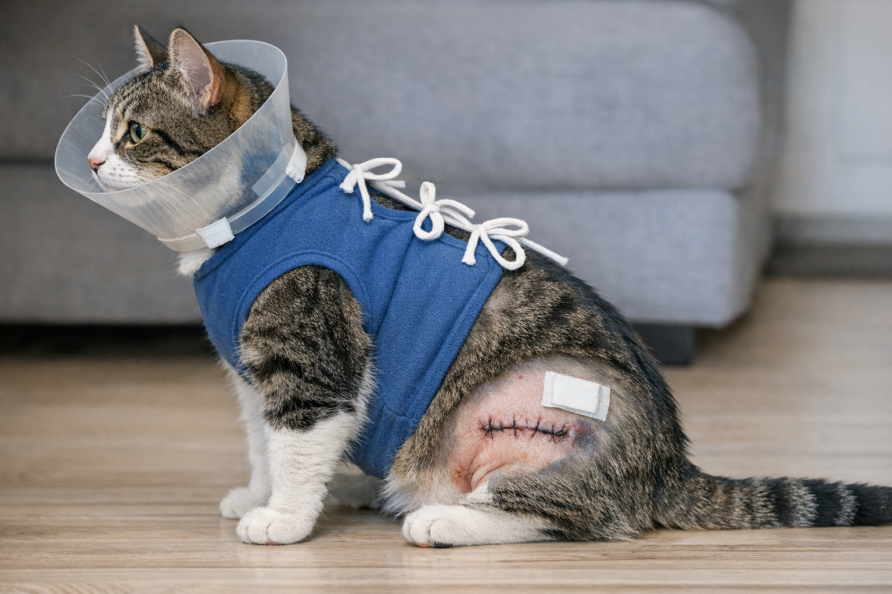

En este apartado vera los programas e iniciativas de la ONG, que consisten en la ayuda y bienestar de los gatos, para poder ser parte del programa se realizara mediante un formulario. A continuación se describen algunos de nuestros programas principales que llevamos a cabo en el establecimiento para maximizar el impacto de nuestras acciones en la comunidad.

Programas e iniciativas
Programa de vacunación: en este programa ofrecemos servicios de vacunación a gatos rescatados y de los hogares, asi como también atención veterinaria basica Aqui

Programa de adopción felina: buscamos dar una segunda oportunidad a gatos rescatados, conectándolos con personas dispuestas a brindarles un hogar responsable y lleno de cariño Aqui

Programa de castración: ofrecemos servicios de castración a gatos rescatados y de los hogares, para prevenir embarazos no deseados y mejorar su salud y bienestar Aqui
